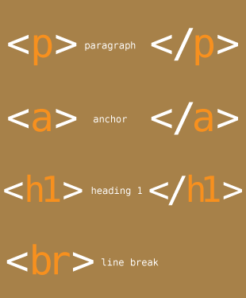

 HTML is the standard markup language for creating Web pages. HTML stands for Hyper Text Markup Language HTML describes the structure of Web pages using markup HTML elements are the building blocks of HTML pages HTML elements are represented by tags HTML tags label pieces of content such as "heading", "paragraph", "table", and so on Browsers do not display the HTML tags, but use them to render the content of the page
History
HTML can trace its roots back to 1989 at CERN, the European Laboratory for Particle Physics. There, Tim Berners-Lee came up with the idea of having scientists from around the world collaborate on research. His idea was rather than simply making documents available on a server as many people were doing at the time, the documents themselves should be able to link to one another, in a way that would enhance collaboration and make information easier to find and more accessible. From this idea Tim created HTML (based off SGML, an earlier markup language) to format pages and HTTP (or Hypertext Transfer Protocol) to transfer them from one computer to another. Although the world didn’t quite realize it yet, the World Wide Web was born.
Around the time that HTML 4.0 was published, a movement began to evolve HTML towards a more flexible style of markup language. Although authors had tried to anticipate the tags necessary to markup documents, the spread of the World Wide Web and the diversity of user agents made keeping up with requirements difficult. In the eyes of many, migrating to a markup language like XML, which allows authors to create their own tags to represent content, would alleviate those concerns and allow HTML to evolve organically. XML also contains stricter formatting rules than HTML, and a sizable number of authors and developers found HTML’s lax parsing rules problematic. This effort resulted in the publishing of the XHTML 1.0 specification in 2000. Although it was not a dramatic departure from HTML 4.0, it did introduce new syntax rules to conform to XML requirements and eliminated the HTML elements that were seen to be dictating the presentation of content rather than the structure of it.
 Shortly
after the 1.0 specification was published, work began on XHTML 2.0, which was to move HTML further
towards XML. XHTML 2.0 was a dramatic departure from previous versions of HTML and was never able to
gain any traction among browser developers. The specification languished for years in the W3C before its
charter was revoked in 2009, essentially ending development.
Shortly
after the 1.0 specification was published, work began on XHTML 2.0, which was to move HTML further
towards XML. XHTML 2.0 was a dramatic departure from previous versions of HTML and was never able to
gain any traction among browser developers. The specification languished for years in the W3C before its
charter was revoked in 2009, essentially ending development.
While the W3C was taking HTML down the XHTML path, a group of authors, developers, and organizations became frustrated with the lack of progress on updating HTML. This group decided to evolve HTML independently of the W3C and formed the Web Hypertext Application Technology Working Group (or WHATWG) in 2004. They began work on the Web Applications 1.0 standard, which extended HTML 4.0, adding clear parsing rules for user agents and creating APIs to make developing web applications easier. The W3C, realizing that XHTML 2.0 faced significant hurdles in adoption, began working with the WHATWG and began to jointly develop the new standard with them in 2008. Currently the W3C works on publishing a stable version of the specification, while the WHATWG continues to work on what they call a “living standard” of the specification. As a living standard, they’ve removed the version number and simply refer to it as “HTML.”
HTML timeline
- 1991: Tim Berners-Lee publishes “HTML Tags” which describes the initial 18 elements of HTML
- 1992: NCSA develops the Mosaic browser, which will eventually evolve into Netscape
- 1994: The Internet Engineering Task Force (IETF) creates an HTML working group to develop HTML specifications. Later that year the W3C was created to foster an open standards environment
- 1995: HTML 2.0 specification is published
- 1995: Microsoft releases Internet Explorer to compete with Netscape
- 1997: HTML 3.2 specification is published
- 1997: HTML 4.0 specification is published
- 2000: XHTML 1.0 is published as a W3C recommendation
- 2004: The WHATWG forms to continue work on HTML
- 2006: W3C announces it will work with the WHATWG on HTML5
- 2009: XHTML Working Group charter expires
- 2012: W3C and WHATWG announce they will develop the HTML5 standard separately